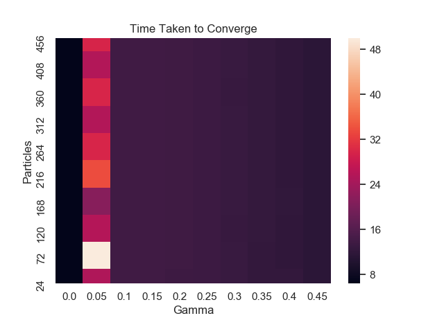
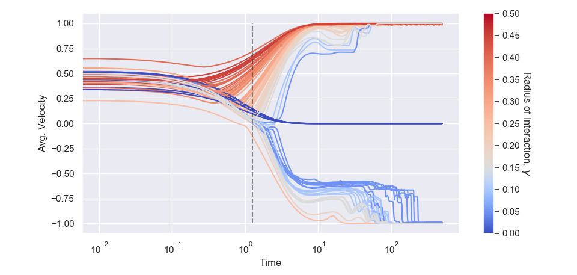
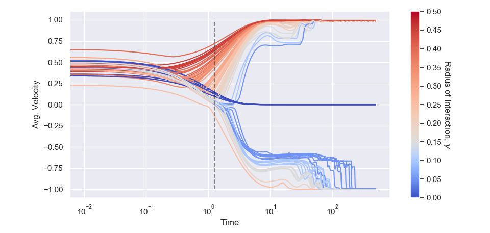

5 Numerical Studies
What are we trying to do here? Learn more about Butta model, isolate what does what.
5.1 PDE Simulation
Hundsdorfer-Verwer, Extended to two dimensions, started on finite volume, flux limiting. Was slow, moved to DDFT software from BG. Ongoing work to simulate deterministic PDE
5.2 Particle System Simulation
Results – Initial simulations show as expect Low particle numbers Hitting times Moved to deterministic model:
- Effect of interation function hard cutoff
- Effect of herding function/gradient
5.2.1 Deterministic Model
In this section we will simplify the models by removing the noise term in the velocity equation. Through a series of examples we will show that despite the similarity, these models can behave very differently. This section will also show that although the PDE is the limit of the particle system, knowledge gained in the study of the PDE can not always be transferred. It will also serve as a good insight into the dynamics of the model. We first summarise the relevant PDE results presented in Butt`a et al. [1].
5.2.1.1 Product Distribution is a Solution
Consider the stationary problem, \[\begin{equation}\label{eq:statPDE} - v\partial_x f_t(x,v) + \partial_v v f_t(x,v)- \partial_v \left[ G\left(M(t,x)\right)f_t(x,v))\right] + \sigma \partial_{vv} f_t(x,v) = 0. \end{equation}\]
Here we will show that a product distribution is a solution of the stationary problem if and only if it is uniform in the space variable and Gaussian in the velocity variable. Moreover, the Gaussian velocity can only have variance \(\sigma\) and mean \(u\) where \(u\) solves \(G(u)=u\). Let \(f(x,v) = g(x)h(v)\), for some functions \(g,h\). Note the lack of dependence on \(t\) as we seek stationary solutions. Then,
\[\begin{align*} \partial_x g(x)h(v) &= h(v)\partial_xg(x)\\ \partial_v g(x)h(v) &= g(x)\partial_v h(v)\\ \partial_{vv} g(x)h(v) &= g(x)\partial_{vv}h(v) \end{align*}\]
The averaging function \(M(t,x)\) can also be simplified. \[ \begin{aligned}[t] M(x) &= \frac{\int_\mathbb{T}\mathrm{d} y\int_\mathbb{R}\mathrm{d} w \,g(y)h(w)\varphi(x-y) w}{\int_\mathbb{T}\mathrm{d} y\int_{\mathbb{R}} \mathrm{d} w \,g(y)h(w)\varphi(x-y)}\\ &= \frac{\left( \int_\mathbb{R}\mathrm{d} w \,w h(w)\right) \int_\mathbb{T}\mathrm{d} y\,g(y)\varphi(x-y)}{\left( \int_{\mathbb{R}}\mathrm{d} w \,h(w)\right) \int_{\mathbb{T}}\mathrm{d} y\,g(y)\varphi(x-y)} && \text{by independence}\\ &= \int_{\mathbb{R}} \mathrm{d} w \,w h(w) && \text{}\\ &= \langle w\rangle_{h} \end{aligned} \]
Note here that the average velocity depends on the distribution. Substituting this all in to gives,
\[\begin{equation} - vh(v)\partial_x g(x) + g(x)\partial_v\left[(v-G(\langle w\rangle))h(v) + \sigma \partial_v h(v)\right] = 0. \label{eq:statPDEproduct} \end{equation}\]
Then, integrating in space, \[\begin{align*} &\partial_v\left[(v-G(\langle w\rangle))h(v) + \sigma \partial_v h(v)\right] = 0\\ \implies & \left[(v-G(\langle w\rangle))h(v) + \sigma \partial_v h(v)\right] = \mathrm{const.} \end{align*}\] where the first addend is zero by periodicity of the torus. So, \[ \partial_v h - \left(\frac{G(\langle w \rangle)-v}{\sigma}\right)h + \mathrm{const.} = 0. \] This can be solved using an integrating factor to give \[ h(v) = C\mathrm{e}^{\frac{2G(\langle w \rangle)v-v^2}{2\sigma}}. \] Applying the normalising constraint gives \[ h(v) = \frac{1}{\sqrt{2\pi\sigma}}\mathrm{e}^{\frac{-(v-G(\langle w \rangle))^2}{2\sigma}}. \]
So the velocity distribution at stationarity is Gaussian with mean \(G(\langle w \rangle )\) and variance \(\sigma^2\). If we take the smooth herding function \(G(u) = \frac{\mathrm{atanh}(u)}{\mathrm{atanh}(1)}\), this corresponds to a Gaussian with mean \(-1,0\) or \(+1\), depending on the initial data. Returning to Equation , we see that the first addend must be identically zero for the equation to hold. In particular, this implies \(\partial_{x} g(x) = 0\), due to the positivity of \(h(v)\) (as it is a Gaussian). We thus deduce that \(g\) must be the uniform measure on \(\mathbb{T}\). Hence, $ f_{t}(x,v) = g_{t} (x)h_{t}(v)$ is a stationary solution of the PDE .
5.2.1.2 Convergence Depends on Initial Average Velocity
If we further assume space homogeneity of the PDE, that is, \(f_t(x,v) = h_t(v)\), we can infer exactly how the average velocity controls the dynamics. If we multiply the space homogeneous PDE by \(v\) and integrate with respect to velocity we obtain \[ \int v \partial_t h_t(v)\mathrm{d} v = -\int v \partial_v G(\langle w \rangle ) h_t(v)\mathrm{d} v + \int v \partial_v vh_t(v)\mathrm{d} v + \sigma \int v \partial_vv h_t(v)\mathrm{d} v \] Integrating by parts then gives an autonomous first order ODE. \[ \partial_t \langle w \rangle = G(\langle w \rangle) - \langle w \rangle \] As it is autonomous, the solution must be monotone, that is, the average velocity. There are stationary points whenever the average velocity solves \(G(\langle w \rangle ) =\langle w \rangle\), as expected from the product solution found previously. For example, if we take \(G(u) = \frac{\mathrm{atanh}(u)}{\mathrm{atanh}(1)}\), then the average velocity converges to $ -1, 0 $ or \(+1\), depending on the sign of the initial average velocity. If \(\langle w \rangle|_{t=0} > 0\), then \(\langle w \rangle \to +1\). Similarly, the stationary point at \(-1\) is stable and the system will converge there for any configuration such that \(\langle w \rangle|_{t=0} < 0\). Finally, \(0\) is an unstable equilibrium, only attainable when \(\langle w \rangle|_{t=0} = 0\). See Figure for a phase plane diagram of the system when \(G\) is the inverse hyperbolic tangent.
To summarise, there are three key facts gleaned here that we use to predict the behaviour of the particle system.
Proceeding with the deterministic examples, we begin with the simplest case: a lone particle given a deterministic initial velocity.This is the simplest initial configuration, simply simulating one particle with a deterministic initial velocity: \[ x^{1,1}_0 = 0, \qquad v^{1,1}_0 = 2 \] The choices here are completely arbitrary, the dynamics will be the same regardless of position on the torus or the velocity. Figure shows that the particle very quickly comes to a stop. This is intuitive from looking at the particle model, but obviously not predicted by the kinetic model. The particle model contains a damping term, while the only forcing arises through the interaction, in the absence of noise. This is because of the \(j\neq i\) in the summation within the interaction term. \[ \frac{\sum_{j=1, \,j\neq i }^N v^{j,N}_t\varphi(x^{j,N}_t - x^{i,N}_t)}{\sum_{j=1, \,j\neq i }^N \varphi(x^{j,N}_t - x^{i,N}_t)} \] In fact, this equation doesn’t make sense for only one particle as it evaluates to \(\frac{0}{0}\). We mitigate this numerically by adding a very small constant to the denominator, so that the term can be evaluated.
This example, while trivial, already illustrates the difference that can arise between kinetic and particle models. (Although, an interacting particle system with only one particle and no interaction is a degenerate case.)
With three particles in the system, more possible behaviours arise. We configure these particles as follows. \[ x^{1,3}_0 =0 \quad x^{2,3}_0 =\frac{6\pi}{100} \quad x^{3,3}_0 = \frac{4\pi}{3}\\ v^{1,3}_0 =1.5 \quad v^{2,3}_0 =1 \quad v^{3,3}_0 = 0 \] If we use the indicator interaction function, \[\begin{equation}\label{eq:indicatorinteraction} \varphi(x) = \mathbbm{1}_{[0,\gamma L]}(\|x\|), \quad 0 \leq \gamma \leq \frac{1}{2}, \end{equation}\] the interaction radius \(\gamma\) determines the convergence of this setup. Here, the system has positive initial average velocity, and as such we expect a monotone convergence to \(+1\). Indeed, taking the interaction radius large enough, for example \(\gamma = 0.06\), this is exactly what happens. The system coalesces into one cluster travelling at velocity \(+1\). Note here that in the absence of noise we expect neither a normally distributed velocity or a uniform distribution in space. However, if we instead take \(\gamma = 0.04\), the interaction is not strong enough for the particles to coalesce. One particle is always left behind as the two clustered particles pass by. This causes a periodic average velocity—that is, not monotone, immediately in contrast to above. It is to be expected that an equation derived from the limit as the number of particles tends to infinity does not reflect the behaviour of just three particles.The problem here is not just that you don’t have enough particles (as we have seen, we can obtain periodic behaviour with arbitrarily large number of particles) but also the fact tat we don’t know (because we haven’t studied it) the behaviour of the limiting equation that you would obtain by sending N to infinity without noise – M
Finally, if the interaction radius is too small, say \(\gamma = 0.01\), then the system behaves as the one particle case, with all particles becoming stationary. This is because the fast moving particle passes through the slower particle without having sufficient time to coalesce. Relevant animations for these three behaviours are
Next, we arrange the particles so that the distance between them increases linearly. That is the distance between the first two is 1, between second and third is 2, etc. The gaps are then scaled onto the torus. This will allow the control of how many particles initially interact.
Here it seems that there are two possibilities: either the system converges to positive average velocity 1 or a periodic orbit occurs, depending on \(\gamma\). However, the regime in which \(\gamma\) causes a periodic trajectory also depends on \(N\). For larger \(N\), \(\gamma\) has to become exceedingly small to produce any interesting behaviour. This is because the gap between the first few particles becomes very small.
The most illustrative example is starting the particles in two diametrically opposite clusters of equal width one containing one third of the total particles with positive velocity, and the other containing two thirds of the particles with negative velocity. This allows for an interesting setup—most particles can move with negative velocity while the average velocity remains positive. We give each particle in the small cluster velocity \(1.8\), while in the larger cluster all particles have velocity \(-0.2\). The initial average velocity of the system is thus around \(+\frac{1}{2}\). The values were chosen so that each cluster is an equal distance from its equilibrium value, were it the only cluster in the system.
\[\begin{align*} x^{i,3N}_0 &\sim U\left[\pi-\frac{\pi}{10},\pi+\frac{\pi}{10}\right], &&v^{i,3N} = -0.2 \quad \text{ for } 1\leq i\leq 2N,\\ x^{i,3N}_0 &\sim U\left[-\frac{\pi}{10},\frac{\pi}{10}\right], &&v^{i,3N} = 1.8\quad \text{ for } 2N\leq i\leq 3N. \end{align*}\]
This is the first example that exhibits a clear difference depending on the scaling used in the interaction term. We will use the term local scaling to describe the model of [1] with interaction term, \[ M(t,x) = \frac{\sum_{j=1, j != i}^N v^{j,N}_t \varphi(x^{j,N}_t - x^{i,N}_t)}{\sum_{j=1, j != i}^N \varphi(x^{j,N}_t - x^{i,N}_t)},\] that is where the interaction is modulated by the number of particles with which each particle is interacting. In contrast, the term global scaling describes the model of [2] with interaction term, \[M(t,x) = \frac{\sum_{j=1, j \neq i}^N v^{j,N}_t \varphi(x^{j,N}_t - x^{i,N}_t)}{N},\] where we scale by the total number of particles in the system, irrespective of interaction. Note that if we use the indicator interaction function, , the local scaling converges to the global scaling as the interaction radius increases, i.e. \[\sum_{j=1, j \neq i}^N \varphi(x^{j,N}_t - x^{i,N}_t) \to N \text{ as } \gamma \to \frac{1}{2}. \]
Figure shows the average velocity of a wide range of interaction radii and particle numbers. There a few things to note here. First, the interaction radius has complete control over the convergence. This is in contrast to , the average velocity is not determining the convergence value. Second, the number of particles in the system has no effect on whether the system converges to \(+1\) or \(-1\) and a negligible effect on the speed of convergence. Thirdly, the average velocity is not monotone, even for large numbers of particles—in contrast to . This happens for all \(0.2 \leq\gamma\leq 0.45\). For \(\gamma = 0.05\) we see that the system settles into a periodic orbit, before eventually converging to \(-1\).
This is the first example in which we see a stark difference between the locally-scaled and globally-scaled models. When the systems are evolved for only \(50s\), the systems appear to converge to a value dependent on the interaction radius. In fact, these are not stable points and evolving for \(500s\) allows the systems to settle to \(\pm1\). See Figure . Periodic, erratic trajectories are also much more prevalent in this model. We also see that some systems do not converge within \(500s\), instead remaining in a periodic trajectory. The average velocity time series is not very illuminating here—in the corresponding animations it can be seen that these are the result of one large cluster forming and few particles remaining separate. The cluster is not strong enough to retain these particles as it passes by. The lone particle is then left behind by the cluster where it slows until the next orbit of the large cluster. This is state remains even for \(1000s\), see for example . Irrespective of scaling, once the radius of interaction and the initial data are fixed, both models converge eventually to the same average velocity. We have not observed any regimes in which the globally scaled equation converges to \(+1\) while the locally scaled model converges to \(-1\) (or vice versa).


Figure 5.1: Time taken to converge for the local subfig:2NNtaulocal and global subfig:2NNtauglobal scaling. In subfig:2NNtauglobal, values that did not converge within 500s have been represented as grey squares. We see the dependence on interaction radius for larger gamma and the independence of N in both cases. The chequerboard effect at intermediate values is caused by the randomness inherent in the initial spatial configuration. Note the difference in scale between the two subfigures.
So we see that the space homogeneous PDE and the particle system have very different behaviours, including stable states. The next step is to assess whether the clusters persist in any way in the particle system—a phenomenon we don’t expect in the noisy system by +++P:product++. For this, we use the same initial condition.
5.2.1.3 Number of Clusters
The number of clusters was assessed using histograms of the particles’ positions at either \(50s\) (in the locally scaled system) or \(500s\) (in the globally scaled model). The longer time scale for the global case is so that the system has time to settle into a stable average velocity. Tables and summarise the result. In either case, a clustered pattern persists. This is intuitive in the deterministic model as there is no noise to break the clusters apart. Any dispersion can only arise through the interaction term, which will be approximately equal for two particles close together. For the local scaling, more clusters appear when \(\gamma\) is lower. When scaling globally however, there is always only one cluster remaining. This is perhaps because in the locally scaled model, for each cluster, the interaction is comparable due to the normalising effect of the denominator. In the globally scaled model, smaller clusters are penalised more heavily their interaction being reduced by the constant scaling by \(N\). Smaller clusters thus get caught by larger clusters. This is not yet a contradiction of +++P:product+++, as we are only looking at the deterministic case, \(\sigma = 0\).
+++LOCAL CLUSTER TABLE+++Number of clusters remaining after \(50s\) in the locally scaled system. Note that \(N\) has very little effect on the clustering while the radius of interaction does.} tab:localcluster
+++GLOBAL CLUSTER TABLE+++ Number of clusters remaining after $500$ in the globally scaled system. In contrast to the local system, only one cluster persists in any regime.5.2.1.4 Introducing Random Velocity Distributions
Thus far, we have only considered deterministic initial velocities. Keeping the spatial initial condition the same, we instead assign initial velocities of particles in each cluster drawn from a normal distribution as follows \[\begin{align*} v^{i,3N} \sim \mathcal{N}(-0.2,0.5^2) \quad \text{ for } 1\leq i\leq 2N,\\ v^{i,3N} \sim \mathcal{N}(1.8,0.5^2) \quad \text{ for } 2N\leq i\leq 3N. \end{align*}\] The variance of the distributions was chosen here so that it was very unlikely that the average velocity of the whole cluster deviated too far from its mean value, thus approximately preserving the distance from equilibria discussed earlier. Figure shows the average velocities analogous to Figure for this setup. For larger \(\gamma\), the normally distributed does not affect the convergence compared to the deterministic initial velocity. In the local scaling, this indifference persists to lower \(\gamma\). The only difference is for some intermediate radii, \(\gamma \approx 0.2\), the system converges to \(+1\) as opposed to \(-1\). This however is only one realisation of the initial data. In the globally scaled case, the random velocity has more of an effect. Here it affects the convergence of both larger and smaller \(\gamma\), with many systems oscillating close to \(\pm 1\).
 label:subfig:avg_vel_small_noise_local

label: subfig:avg_vel_small_noise_global
caption: When the initial velocities are instead normally distributed instead of constant, we see different behaviour (c.f. Figure ,). There is still a change in behaviour around \(\gamma\approx 0.2\) however it is much less well defined. The setup here is identical to Figure , other than the initial velocity distribution. We also see that some setups that previously converged to \(-1\) converge to \(+1\). Note that this is only one realisation of the initial configuration, upon averaging over many runs it should be similar to the deterministic initial condition.
label :fig:avg_vel_small_noise
label:subfig:avg_vel_small_noise_local

label: subfig:avg_vel_small_noise_global
caption: When the initial velocities are instead normally distributed instead of constant, we see different behaviour (c.f. Figure ,). There is still a change in behaviour around \(\gamma\approx 0.2\) however it is much less well defined. The setup here is identical to Figure , other than the initial velocity distribution. We also see that some setups that previously converged to \(-1\) converge to \(+1\). Note that this is only one realisation of the initial configuration, upon averaging over many runs it should be similar to the deterministic initial condition.
label :fig:avg_vel_small_noise
Simplifying to the deterministic models illuminates the effects of different terms, without the effect of noise. We have seen here that the particle system average velocity is not monotone, and that it does not govern the equilibrium value. This has also made clear the difference in the two models, despite their similarity. In particular, the global scaling slows convergence for many different interaction radii compared to an identical locally scaled system.
References
[1] Buttà, P., Flandoli, F., Ottobre, M. and Zegarlinski, B. (2019). A non-linear kinetic model of self-propelled particles with multiple equilibria. Kinetic & Related Models 12(4) 791–827.
[2] Garnier, J., Papanicolaou, G. and Yang, T.-W. (2019). Mean field model for collective motion bistability. Discrete & Continuous Dynamical Systems - B 24 851.